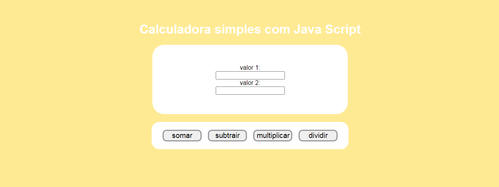
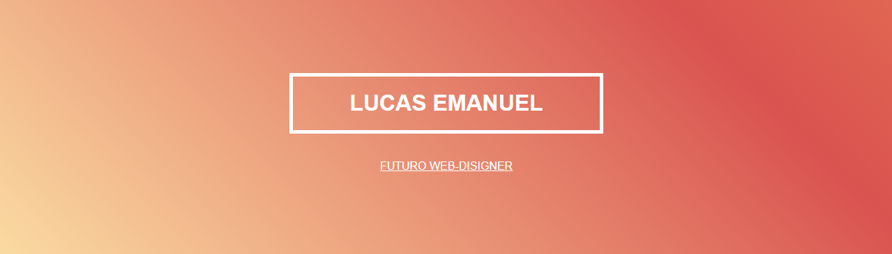

O meu nome é Lucas, e
esses são alguns dos
meus projetos.
Calculadora
esse é um dos meus pequenos projetos com Java script(JS). como da pra ver, é uma calculadora bem simples, não foi muito complicada pra fazer kkk, deu um trabalhinho, mais para quem esta iniciando, como eu, tudo é um desafio.
ele é um dos meus favoritos, por ser Simples, facil e útil. você pode testar ele AQUI.
Projeto cordel
esse foi um projeto feito em um curso online, se quiser ver qual foi, é so apertar AQUI, ele é gratuito. esse foi um projeto que eu fiquei muito feliz de fazer, gostei muito do resultado, e aprtendi várias tags novas. se vc quiser ver o esse projeto, é so apertar AQUI.
Projeto lucas
sinceramente, kkk eu fiz esse so pra brincar mesmo, fui nesse projeto q aprendi a fazer background animado. se quiser ver ele, é so apertar AQUI